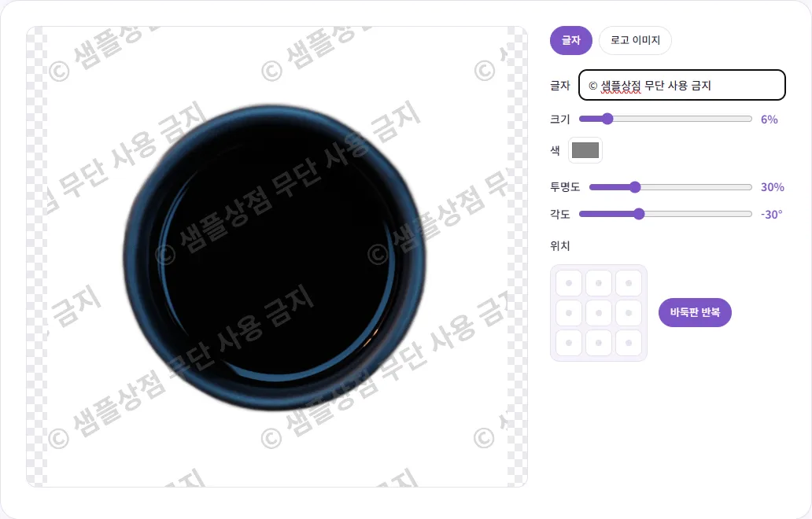
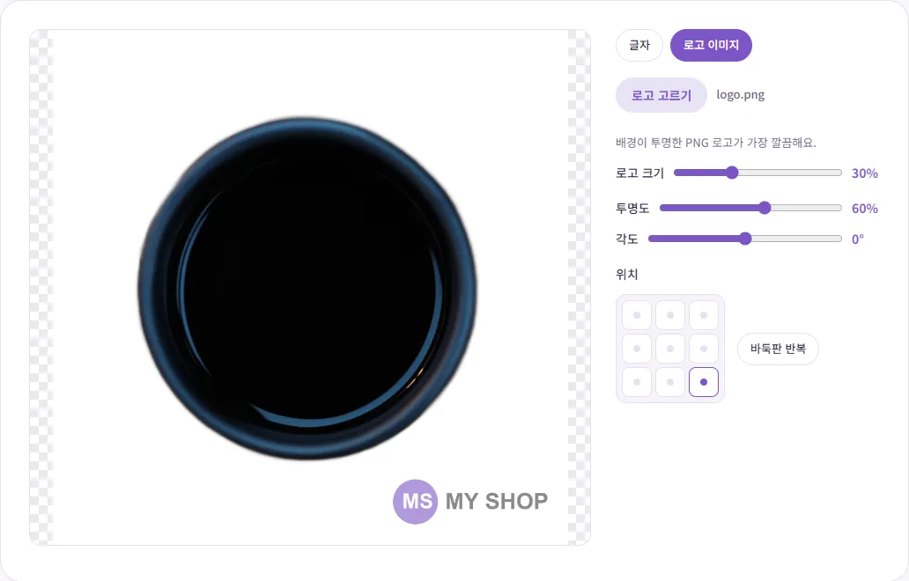
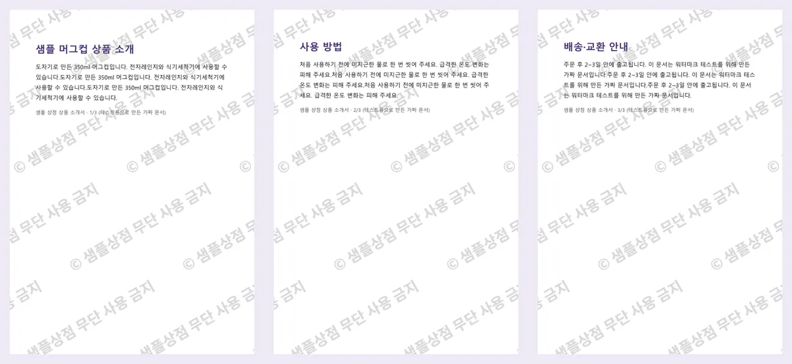

내 사진과 상세페이지, 워터마크로 도용을 줄이려면?
공들여 찍은 상품 사진이나 직접 만든 상세페이지가 다른 가게에 그대로 올라와 있는 걸 보면 정말 속상하죠. 이 글에서는 워터마크가 어디까지 막아 주는지 솔직하게 짚고, 글자·로고 워터마크를 보기 좋게 넣는 법과 여러 장·PDF를 한 번에 처리하는 법을 실제로 해 본 숫자와 함께 알려 드릴게요.
워터마크로 막을 수 있는 것과 없는 것
먼저 기대치를 맞춰 둘게요. 워터마크는 도용을 '완전히' 막아 주지 못해요. 사진 일부를 잘라 내거나, 화면을 캡처해 다시 편집하거나, 아예 비슷하게 새로 찍는 것까지 막을 수는 없어요. 그래도 워터마크를 넣으면 이런 효과가 있어요.
- 귀찮게 만들어요: 그냥 저장해서 바로 쓰기 어려워지니, 손쉽게 가져다 쓰려던 사람은 다른 사진을 찾게 돼요.
- 출처가 따라가요: 사진이 퍼져도 가게 이름이 함께 보여서, 보는 사람이 원래 주인을 알 수 있어요.
- 내 것이라는 표시가 돼요: 도용을 발견했을 때 원래 내 사진이라는 걸 보여 주는 데 도움이 돼요.
법적으로도 짚어 볼게요. 저작권법 제10조는 저작권이 저작물을 창작한 때부터 생기고 어떤 절차나 형식도 필요 없다고 정하고 있어요. 워터마크가 없다고 권리가 없어지는 건 아니라는 뜻이에요. 다만 저작권법 제2조가 저작물을 '인간의 사상 또는 감정을 표현한 창작물'로 정의하고 있어서, 모든 사진이 똑같이 보호된다고 단정하기는 어려워요. 또 저작권법은 저작권자를 알아볼 수 있는 정보처럼 저작물에 붙은 '권리관리정보'를 정당한 권한 없이 고의로 제거·변경하는 행위를 금지하고 있어요(제104조의3). 가게 이름이나 저작권자를 밝힌 워터마크가 여기에 해당할 수 있지만, 구체적인 사건에서 어떻게 판단될지는 상황에 따라 달라요. 실제 분쟁이 생기면 전문가와 상담하세요.
글자 워터마크 넣기
- 워터마크 넣기를 열고 사진을 올리세요. 여러 장을 한꺼번에 올려도 돼요.
- '글자'가 선택된 상태에서 넣을 문구를 적으세요. '© 가게이름'이나 '가게이름 · 무단 사용 금지'처럼 짧을수록 깔끔해요.
- 크기·색·투명도·각도를 조절하세요. 미리보기가 바로 바뀌어요.
- 위치에서 9칸 중 하나를 고르거나 '바둑판 반복'을 누르세요.
- '워터마크 넣고 받기'를 누르면 저장돼요.

문구에는 가게 이름이나 SNS 계정 이름처럼 손님이 검색해서 찾아올 수 있는 이름을 넣는 게 좋아요. '샘플'이나 'SAMPLE'만 적으면 가져다 쓰기는 어려워져도, 사진이 퍼졌을 때 누구 사진인지는 알 수 없어요. 설정값을 고를 때 알아 두면 좋은 점도 있어요.
- 크기: 사진의 짧은 변을 기준으로 한 %라서, 사진마다 크기가 달라도 비슷한 비율로 들어가요.
- 투명도: 이 도구에서는 숫자가 클수록 진하게(잘 보이게) 들어가요. 바둑판 반복을 30%로 해 보니 상품은 잘 보이면서 글자도 읽혔어요. 사진에 따라 조금씩 올리거나 내려 보세요.
- 색: 밝은 사진에는 회색, 어두운 사진에는 흰색이 무난해요. 테스트한 사진처럼 흰 배경과 검은 상품이 섞여 있으면 회색이 양쪽에서 다 보여요.
- 각도: 비스듬하게 넣으면 가로로 잘라 내기가 더 어려워져요. 기본값은 -30°예요.
로고로 넣기와 위치 고르기
로고 파일이 있다면 '로고 이미지'를 누르고 로고를 고르세요. 배경이 투명한 PNG를 써야 해요. 흰 배경이 있는 로고는 네모난 흰 상자가 함께 찍혀요. 로고 모드로 바꾸면 각도는 0°(똑바로)로 바뀌어요.

| 위치 | 좋은 점 | 아쉬운 점 | 어울리는 곳 |
|---|---|---|---|
| 구석 하나 | 상품이 가려지지 않아 깔끔해요 | 그 부분만 잘라 내면 사라져요 | 상세페이지 사진, SNS 홍보 사진 |
| 정가운데 | 잘라 내기 어려워요 | 상품을 가려요 | 시안·견본 공유 |
| 바둑판 반복 | 어디를 잘라도 남아요 | 사진이 복잡해 보여요 | 미리보기용 자료, 사본 서류 |
판매용 사진이라면 대표이미지는 조심하세요. 네이버 쇼핑파트너센터의 '상품검색 SEO 가이드'는 이미지 안에 텍스트·워터마크·도형이 과도하게 들어간 경우를 저품질 사례로 들고 있어요. 대표이미지는 깨끗하게 두거나 구석에 작게만 넣고, 진하게 넣는 워터마크는 상세페이지 이미지나 블로그·SNS용 사진에 쓰는 식으로 나누는 걸 추천해요. 대표이미지를 흰 배경으로 정리하는 법은 상품 사진 흰 배경 만들기에 있어요.
여러 장과 PDF를 한 번에
사진 3장(1840×1840, 3840×2560, 4000×2991)과 3쪽짜리 PDF 소개서를 한꺼번에 올리고 같은 설정으로 저장해 봤어요. 4개가 모두 끝나는 데 약 1.3초가 걸렸고, 결과는 ZIP 파일 하나로 내려왔어요. 미리보기에 보이는 파일만이 아니라 목록에 있는 모든 파일에 같은 워터마크가 들어가요.
| 파일 | 원래 용량 | 워터마크 후 |
|---|---|---|
| 흰 배경 상품 사진 JPG | 162.6KB | 238.3KB |
| 나무 식탁 상품 사진 JPG | 1.4MB | 1.6MB |
| 고화질 단체 사진 JPG | 8.7MB | 2.9MB |
| 3쪽 PDF | 39.9KB | 287.8KB |
JPG는 품질 92%로 다시 저장돼서, 원본 화질에 따라 용량이 늘기도 줄기도 해요. 가로세로 크기는 모두 원본 그대로였어요. PDF는 모든 쪽에 워터마크가 들어갔고, 원래 글자는 그대로 남아서 결과 PDF에서도 글자를 선택·검색할 수 있었어요. 대신 워터마크가 그림으로 얹히기 때문에 이 테스트에서는 용량이 39.9KB에서 287.8KB로 커졌어요. 메일 첨부 용량이 걱정된다면 PDF 용량 줄이기를 함께 쓰세요. 미리보기는 PDF 첫 쪽만 보여 줘요.

도용을 줄이는 습관 몇 가지
- 원본은 따로 보관하세요: 워터마크 넣은 파일은 이름 뒤에 _watermark가 붙은 새 파일로 저장되고, 원본은 그대로 남아요. 워터마크 없는 고화질 원본은 내 컴퓨터나 클라우드에 보관해 두면, 나중에 내 사진이라는 걸 보여 줄 때도 도움이 돼요.
- 필요 이상 큰 사진은 올리지 마세요: 화면에 보이는 크기보다 훨씬 큰 원본을 올리면 그대로 가져가 인쇄하거나 다시 편집하기도 쉬워요. 올리기 전에 이미지 크기 조절로 줄여 두는 것도 방법이에요.
- 신분증·통장 사본에도: 같은 도구로 '○○은행 제출용'처럼 쓰임새를 적어 바둑판으로 넣으면 다른 곳에 함부로 쓰이는 걸 줄이는 데 도움이 돼요.
파일은 모두 내 브라우저 안에서 처리되고 서버로 올라가지 않아요. 워터마크는 도용을 줄이는 여러 방법 중 하나일 뿐이니, 원본 보관과 함께 쓰는 걸 권해요.
참고한 자료
글에서 소개한 도구, 회원가입 없이 바로 써 보세요.
💧 워터마크 넣기 바로 쓰기